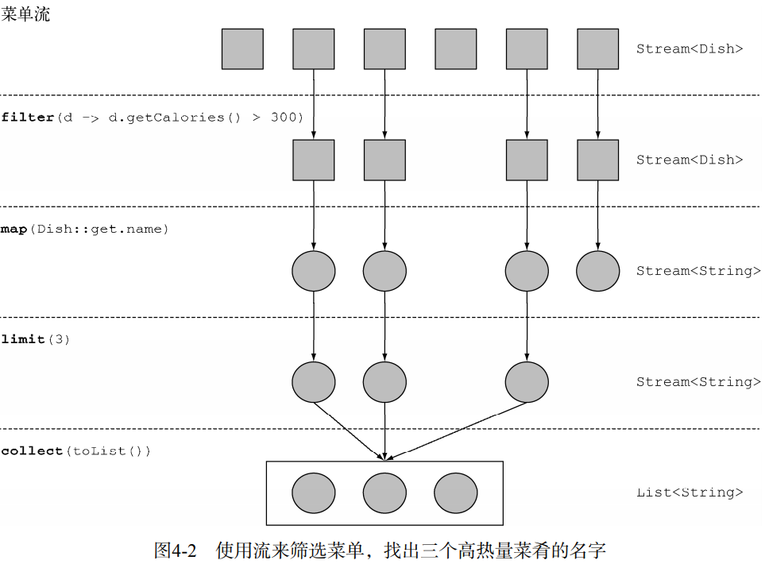
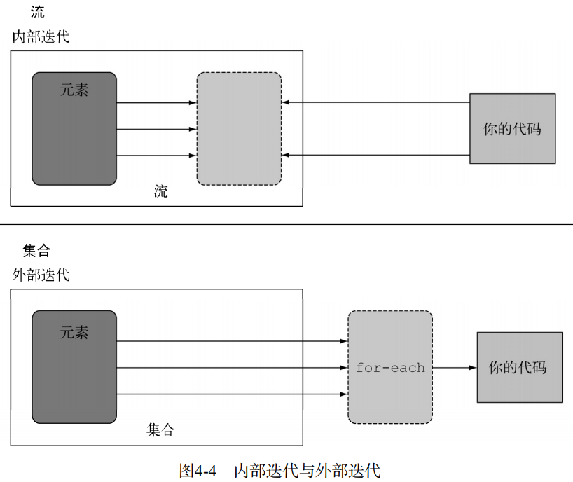

个人理解： 流的出现是对for循环等外部迭代的替换。根据stream提供的操作，来完成stream内部迭代时对元素的操作
在流水线中中间流程返回的都是stream对象
1. stream使得代码
- 声明性--易读
- 可复合--灵活
- 可并行--性能好
2.stream相比集合的特性
建立流水线
- 集合讲的是数据(注重全部存储)，流讲的是计算(注重按需局部计算，需求驱动，甚至是实时制造)
- 流会使用一个提供数据的源，如集合、数组(Arrays.stream(数组))或输入/输出资源
- 流操作可以顺序执行，也可并行执行
- 流的数据处理功能支持类似于数据库的操作,（可以看作对源的一个查询）
- 流只能消费一次 
stream的内部迭代的优势
捡玩具例子
- Streams库的内部迭代可以自动选择一种适合你硬件的数据表示和并行实现
